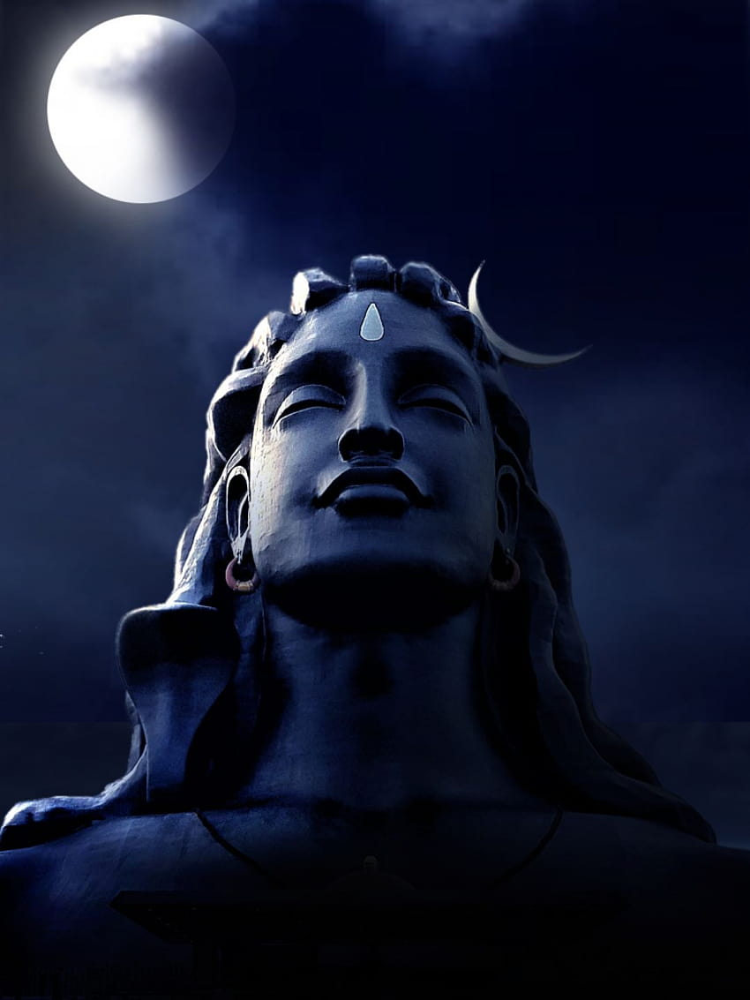
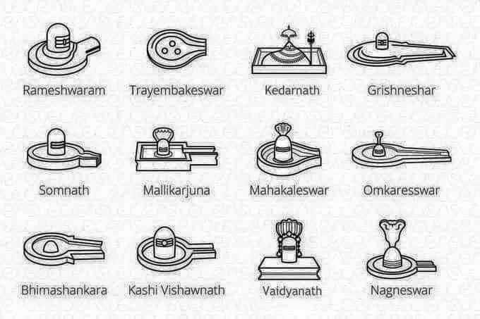

SHIVA

Who is Shiva?
The god Shiva is one of the most important figures in the Hindu belief. His name literally means “the auspicious one”, but his most common epithet is “the destroyer”. He takes on many forms in Hindu scripture and is said to have 1008 names.
Common names of shiva.
- Adiyogi
- Mahakal
- Bholenath
- Mahadeva
- Omkara
- Kailashnath
- Mahesha
- Shankar
About Shiv ji.
Shankar ji is called the god of destruction . Shankar ji is famous for both his gentle face and fierce form. He is called Mahadev because he is considered more than other gods. Shiva is the ruler of the origin, condition and destruction of the universe. Among the trinity, Lord Shiva is considered the God of destruction. Shiva is eternal and the primary source of the creation process and this Kaal Mahakaal is the basis of astrology. Although the meaning of Shiva is considered to be welfare, but he has always kept both rhythm and holocaust under his control. Ravan , Shani , Kashyap Rishietc. have become his devotees. Shiva sees everyone equally, that's why he is called Mahadev.
Jyotirlingas.

What is Jyotirlingas?
Jyotirlingas are unique representations of Lord Shiva. Jyoti means 'light' and linga means 'mark, a sign'. Jyotirlinga means the 'Radiant sign of Lord Shiva'.
There are 12 Jyotirlinga.
- Somnath
- Mahakaleshwar
- Omkareshwar
- Mallikarjuna
- Vaijnath
- Kedarnath
- Nageshwar
- Trimbakeshwar
- Bhimashankar
- Rameshwar
- Grishneshwar
- Kashi vishwanath
Some of my favorite Shiva songs.
- Bhala
- Shi shiv Shankara
- Shiva Tandava Stotram
- Mera Bhola hai bhandari